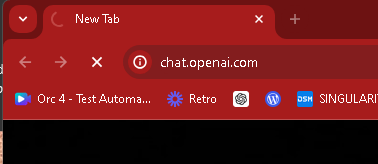
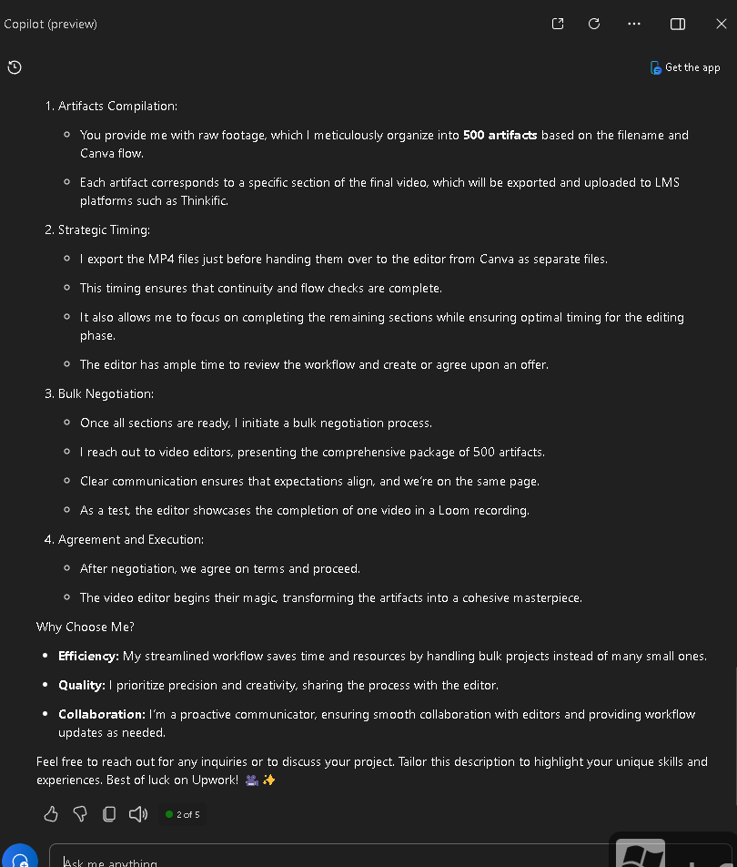
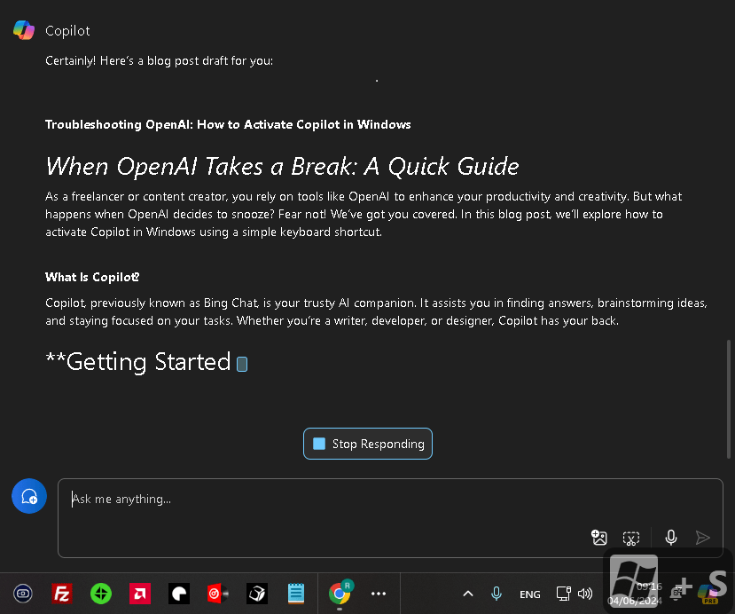

OpenAI not turning on today so move with Win + C > Copilot


Free version a bit slow

Certainly! Here’s a blog post draft for you:
Troubleshooting OpenAI: How to Activate Copilot in Windows
When OpenAI Takes a Break: A Quick Guide
As a freelancer or content creator, you rely on tools like OpenAI to enhance your productivity and creativity. But what happens when OpenAI decides to snooze? Fear not! We’ve got you covered. In this blog post, we’ll explore how to activate Copilot in Windows using a simple keyboard shortcut.
What Is Copilot?
Copilot, previously known as Bing Chat, is your trusty AI companion. It assists you in finding answers, brainstorming ideas, and staying focused on your tasks. Whether you’re a writer, developer, or designer, Copilot has your back.
Getting Started
- Restart Your Computer:
Sometimes, even AI needs a reboot. Restart your system to ensure everything is fresh and ready.
- Spot the Copilot Icon:
Look for the Copilot icon on your taskbar. It’s a friendly little chat bubble.
-
Alternatively, use the keyboard shortcut Win + C to summon Copilot into action.
-
Meet Copilot:
Copilot’s interface will appear as a sidebar overlay on the right side of your screen.
- It’s powered by Microsoft Edge, so you know it means business.
Two Modes, One Goal
- Default Mode: Sidebar Overlay
Copilot sits unobtrusively on the right edge of your screen.
-
Access its features without disrupting your workflow.
-
Use Alt + Tab to switch between Copilot and other apps seamlessly.
-
Side-by-Side Mode: Integrated Awesomeness
Click the “Show side by side” button (top right corner).
-
Copilot now runs alongside your active applications.
-
No more juggling windows—focus on your work while Copilot assists.
Remember These Tips:
-
Snap Assist: Arrange your open app windows as you like.
-
Alt + Tab: Switch focus between apps and Copilot effortlessly.
-
Closing Copilot: Click the X at the top, just like any other app.
-
Local Accounts: Copilot’s experience may vary if you’re not signed in with a Microsoft account.
-
Work or School Accounts: Expect a slightly different experience.
Why Choose Copilot?
-
Efficiency: Handle bulk projects seamlessly.
-
Quality: Prioritize precision and creativity.
-
Collaboration: Communicate smoothly with editors.
Conclusion
OpenAI might take a coffee break now and then, but Copilot is always ready to assist. So, Win + C your way to productivity, and let Copilot be your creative co-pilot!
Remember to tailor this blog post to your unique experiences and style. Happy writing! 🚀✨
Disclaimer: Copilot in Windows is currently in preview, so keep an eye out for updates and improvements.12
1: OpenAI Status 2: How to enable Copilot in Windows 11 - gHacks Tech News
Imported from rifaterdemsahin.com · 2024